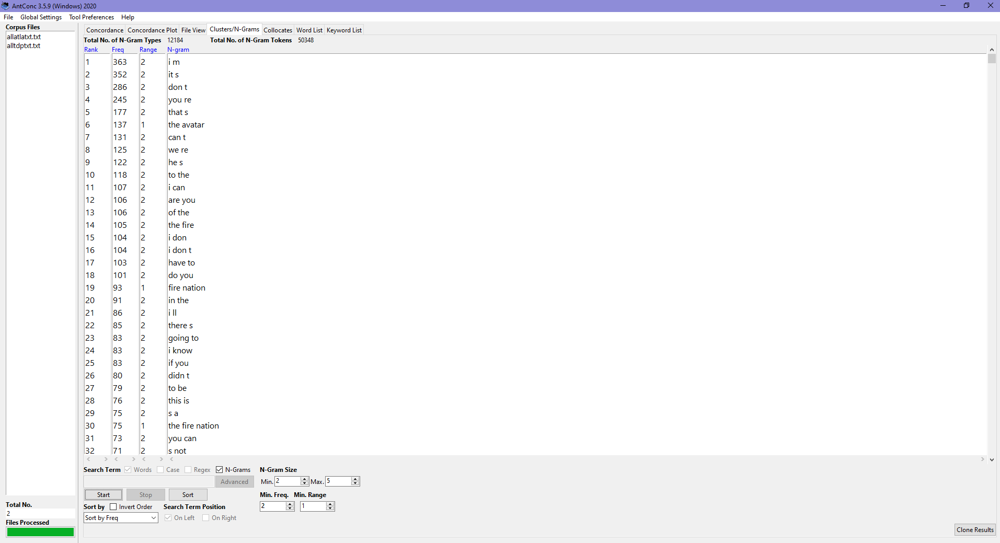
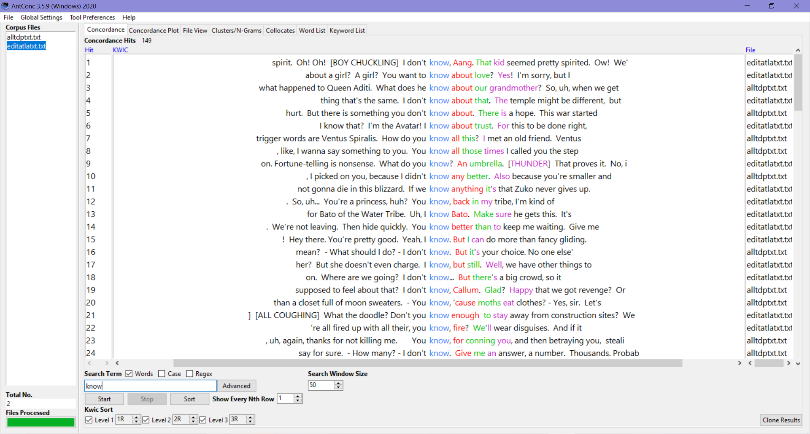
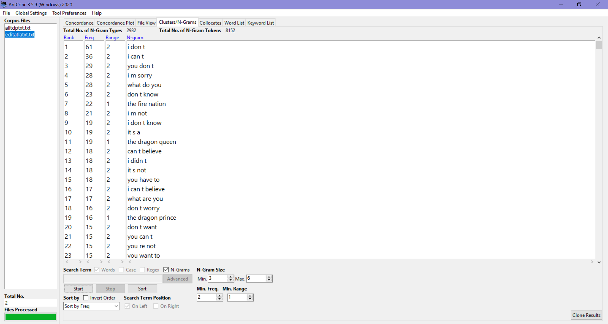
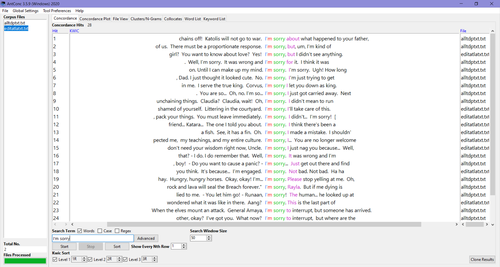
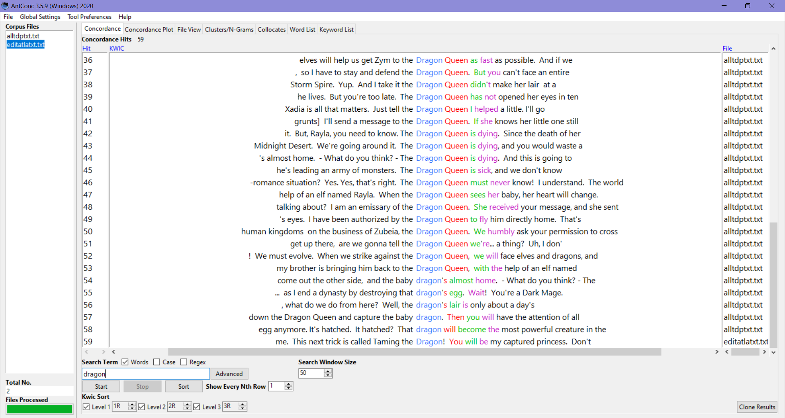
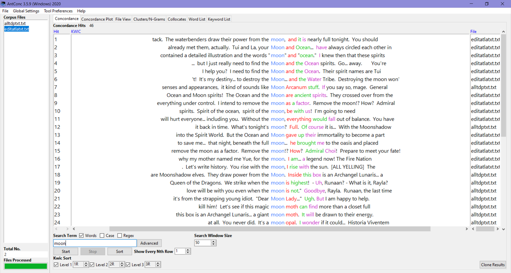
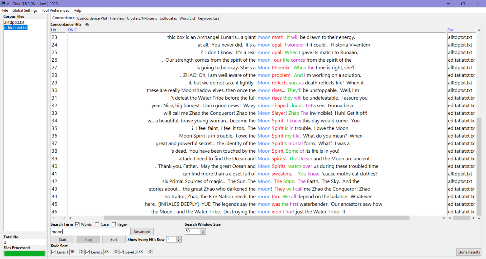

I chose these two TV shows (Avatar the Last Airbender and The Dragon Prince) because they both have the same creative director, Aaron Ehasz. Both have similar themes and concepts. They both take place during a time of war and both have cultural foundations in nature and elements. Because of this, I was curious to see how the dialogue, or writing, differs between the shows.
An important note is that the episodes I used are not the entire shows. For Avatar the Last Airbender, I have most of season 1 (19 episodes because the first episode was not available). For The Dragon Prince I have the first episode of season 1 and then all of season 3 (these were all that were available from the site that suited the project requirements).

Set to 245 terms the word cloud for Avatar the Last Airbender shows a lot of names and common words such as “I’m” and “it’s”. This may be a little skewed because in the show they are introducing themselves, and the Avatar, a lot. For future reference, it may be wise to choose later seasons to compare.

For The Dragon Prince, also set to 245 terms, “I’m” and “it’s” are the two most popular words again! Names are much smaller compared to Avatar the Last Airbender. This may be due to storyline decisions, such as not having to introduce themselves as much. There are many more prominent words in The Dragon Prince, such as “king,” “dragon,” “going,” and “just” to name a few.


Because “I’m” and “it’s” are pretty general words (and character names are important) I do not think that says anything about the writing of the shows. The results above are for Avatar the Last Airbender on the left and The Dragon Prince on the right.
Moving onto Antconc, the topmost n-grams show the same / similar results as Voyant. However, my pool of information may be a bit biased towards Avatar the Last Airbender because there are more episodes in each season. Normally, I would balance this by using more The Dragon Prince episodes, but I am already using all of the text available. I can see this bias because some of the topmost n-grams are “the avatar” and “the fire nation”.
So, what I will do is trim down the Avatar the Last Airbender content so that it is equal to the amount of The Dragon Prince content. I will not redo the Voyant information because I like that unedited view of the series. When comparing the two more directly I think it is more fair to trim the content I have for Avatar the Last Airbender.
(For the record, the word count for Avatar the Last Airbender was more than twice that of The Dragon Prince. Now, they are more even!)
Because “know” was such a popular word utilized, I decided to take a closer look at it. From the top hits, I noticed that it is normally used (when not at the end of a sentence) in correlation with relationships, to someone, or about someone. Such as with, “What does he know about our grandmother,” “I know Bato,” “I don’t know, Callum,” and “I know about trust.”
When increasing the n-gram size to 3, I noticed that “I’m sorry,” was the 4th most popular phrase.
A deeper investigation shows that a few usages are out of general apologies, such as being sorry for interrupting. However other usages are for mistakes or heartfelt apologies for something bad happening such as with, “I'm sorry about what happened to your father,” (in a case where a character’s father was gravely injured).
Another word that I thought would be interesting to test is “dragon.” There are dragons in both series (more so in The Dragon Prince, but there are references to dragons in Avatar the Last Airbender because they were the original fire-benders). Obviously The Dragon Prince has way more usages of “dragon” but at the very end there is also one for Avatar the Last Airbender too! This word may have been better to compare with a point later in the series, but I did not want to bias my results by picking seasons based solely on a word or phrase.
 A word that I am surprised did not show up on Voyant and Antconc as a popular word is “moon.” Looking for it, I noticed that there is a pretty even mix of this word utilized througout both of these shows on its own (not in a show specific word like “moonshadow”). Most of the “moon” usages in Avatar the Last Airbender is from the season 1 finale. This is evident because the usages in Avatar the Last Airbender are comprised of moments when Admiral Zhao tries to kill the moon spirit… “I intend to remove the moon as a factor…” Meanwhile, in The Dragon Prince, the moon is a running theme. There are even general creatures like “moon moths” and a “Moon Phoenix”… “Let's see if this magic moon moth can find more than a closet full of moon sweaters.” … “She's a Moon Phoenix!”
In the end, these two shows, though made by the same creative director and have similar themes and aspects, are not very similar in wording or phrasing. I honestly had expected more similarities due to the fact that these two shows have similar themes, such as elements.
I think it would be interesting to conduct this experiment again, but this time using similar point in the stories (even if that means I have to find another site for the script and edit it). Despite the hiccups and flaws with the data originally and the inconguency with the seasonal timelines, I think my comparisons have made some interesting discoveries! These shows, while carrying the same vibes and styles, are not the same in language. (This is discounting general language that is utilized with common speech.)